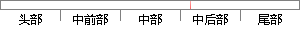

bashrc文件，命令为：
片段位置图

相似结果
相似片段：(3)编辑/root/.bashrc文件,编辑命令为≠}gedit/root/.bashrc,在文件末尾添加expon PATH=$PATH:/usr/local/an_Tl/3.4.1厂bin语句并保存,如图2.5所示。 ...
| 标题 | 《嵌入式指纹识别系统的设计与研究》 |
| 对比库 | 中国学位论文全文数据库 |
| 作者 | 刘培卓 |
| 机构 | 北京化工大学 |
| 分类 | 计算机应用技术 |
| 年份 | 2011 |
| 相似率 | 100% （严重抄袭） |
※ 片段修改建议 ※
近似词参考：- 命令：号令 饬令 敕令 下令
系统自动生成语句：bashrc文件，号令为：
注：本片段修改建议为系统自动生成，仅供参考。